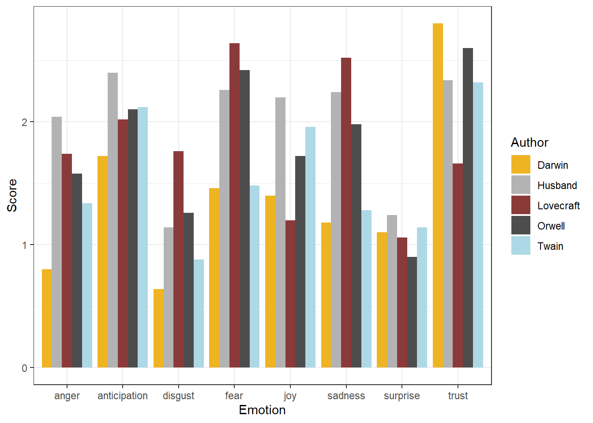

Sentiment Analysis in R
Martin Schweinberger
2020-09-23

Introduction
This tutorial introduces sentiment analysis (SA) and show how to petrform a SA in R. The entire R-markdown document for the tutorial can be downloaded here.
Preparation and session set up
This tutorial is based on R. If you have not installed R or are new to it, you will find an introduction to and more information how to use R here. For this tutorials, we need to install certain packages from an R library so that the scripts shown below are executed without errors. Before turning to the code below, please install the packages by running the code below this paragraph. If you have already installed the packages mentioned below, then you can skip ahead ignore this section. To install the necessary packages, simply run the following code - it may take some time (between 1 and 5 minutes to install all of the libraries so you do not need to worry if it takes some time).
# install libraries
install.packages(c("knitr", "lattice", "ggplot2", "dplyr", "likert", "scales",
"vcd", "tm", "wordcloud", "stringr", "SnowballC", "tidyr",
"gridExtra", "knitr", "kableExtra", "stringr"))Once you have installed R-Studio and initiated the session by executing the code shown above, you are good to go.
1 Sentiment Analysis
Sentiment Analysis is a cover term for approaches which extract information on emotion or opinion from natural language [@]. Sentiment analyses have been successfully applied to analysis of language data in a wide range of disciplines such as psychology, economics, education, as well as political and social sciences. Commonly sentiment analyses are used to determine the stance of a larger group of speakers towards a given phenomenon such as political candidates or parties, product lines or situations. Crucially, sentiment analyses are employed in these domains because they have advantages compared to alternative methods investigating the verbal expression of emotion. One advantage of sentiment analyses is that the emotion coding of sentiment analysis is fully replicable.
Typically, Sentiment Analysis represents a type of classifier only provide information about positive or negative polarity, e.g. whether a tweet is “positive” or “negative”. Therefore, Sentiment Analysis is often regarded as rather coarse-grained and, thus, rather irrelevant for the types of research questions in linguistics.
In the language sciences, Sentiment Analysis can also be a very helpful tool if the type of Sentiment Analysis provides more fine-grained information. In the following, we will perform such a information-rich Sentiment Analysis. The Sentiment Analysis used here does not only provide information about polarity but it will also provide association values for eight core emotions.
The more fine-grained output is made possible by relying on the Word-Emotion Association Lexicon (Mohammad & Turney 2013), which comprises 10,170 terms, and in which lexical elements are assigned scores based on ratings gathered through the crowd-sourced Amazon Mechanical Turk service. For the Word-Emotion Association Lexicon raters were asked whether a given word was associated with one of eight emotions. The resulting associations between terms and emotions are based on 38,726 ratings from 2,216 raters who answered a sequence of questions for each word which were then fed into the emotion association rating (see Mohammad and Turney (2013)). Each term was rated 5 times. For 85 percent of words, at least 4 raters provided identical ratings. For instance, the word cry or tragedy are more readily associated with SADNESS while words such as happy or beautiful are indicative of JOY and words like fit or burst may indicate ANGER. This means that the sentiment analysis here allows us to investigate the expression of certain core emotions rather than merely classifying statements along the lines of a crude positive-negative distinction.
Getting started
Before turning to the SA, we will load the packages for this tutorial.
# activate packages
lapply(c("knitr", "lattice", "ggplot2", "dplyr", "likert", "scales",
"vcd", "tm", "wordcloud", "stringr", "SnowballC", "tidyr",
"gridExtra", "knitr", "kableExtra", "stringr"),
library,
character.only = TRUE)## [[1]]
## [1] "knitr" "stats" "graphics" "grDevices" "utils" "datasets"
## [7] "methods" "base"
##
## [[2]]
## [1] "lattice" "knitr" "stats" "graphics" "grDevices" "utils"
## [7] "datasets" "methods" "base"
##
## [[3]]
## [1] "ggplot2" "lattice" "knitr" "stats" "graphics" "grDevices"
## [7] "utils" "datasets" "methods" "base"
##
## [[4]]
## [1] "dplyr" "ggplot2" "lattice" "knitr" "stats" "graphics"
## [7] "grDevices" "utils" "datasets" "methods" "base"
##
## [[5]]
## [1] "likert" "xtable" "dplyr" "ggplot2" "lattice" "knitr"
## [7] "stats" "graphics" "grDevices" "utils" "datasets" "methods"
## [13] "base"
##
## [[6]]
## [1] "scales" "likert" "xtable" "dplyr" "ggplot2" "lattice"
## [7] "knitr" "stats" "graphics" "grDevices" "utils" "datasets"
## [13] "methods" "base"
##
## [[7]]
## [1] "vcd" "grid" "scales" "likert" "xtable" "dplyr"
## [7] "ggplot2" "lattice" "knitr" "stats" "graphics" "grDevices"
## [13] "utils" "datasets" "methods" "base"
##
## [[8]]
## [1] "tm" "NLP" "vcd" "grid" "scales" "likert"
## [7] "xtable" "dplyr" "ggplot2" "lattice" "knitr" "stats"
## [13] "graphics" "grDevices" "utils" "datasets" "methods" "base"
##
## [[9]]
## [1] "wordcloud" "RColorBrewer" "tm" "NLP" "vcd"
## [6] "grid" "scales" "likert" "xtable" "dplyr"
## [11] "ggplot2" "lattice" "knitr" "stats" "graphics"
## [16] "grDevices" "utils" "datasets" "methods" "base"
##
## [[10]]
## [1] "stringr" "wordcloud" "RColorBrewer" "tm" "NLP"
## [6] "vcd" "grid" "scales" "likert" "xtable"
## [11] "dplyr" "ggplot2" "lattice" "knitr" "stats"
## [16] "graphics" "grDevices" "utils" "datasets" "methods"
## [21] "base"
##
## [[11]]
## [1] "SnowballC" "stringr" "wordcloud" "RColorBrewer" "tm"
## [6] "NLP" "vcd" "grid" "scales" "likert"
## [11] "xtable" "dplyr" "ggplot2" "lattice" "knitr"
## [16] "stats" "graphics" "grDevices" "utils" "datasets"
## [21] "methods" "base"
##
## [[12]]
## [1] "tidyr" "SnowballC" "stringr" "wordcloud" "RColorBrewer"
## [6] "tm" "NLP" "vcd" "grid" "scales"
## [11] "likert" "xtable" "dplyr" "ggplot2" "lattice"
## [16] "knitr" "stats" "graphics" "grDevices" "utils"
## [21] "datasets" "methods" "base"
##
## [[13]]
## [1] "gridExtra" "tidyr" "SnowballC" "stringr" "wordcloud"
## [6] "RColorBrewer" "tm" "NLP" "vcd" "grid"
## [11] "scales" "likert" "xtable" "dplyr" "ggplot2"
## [16] "lattice" "knitr" "stats" "graphics" "grDevices"
## [21] "utils" "datasets" "methods" "base"
##
## [[14]]
## [1] "gridExtra" "tidyr" "SnowballC" "stringr" "wordcloud"
## [6] "RColorBrewer" "tm" "NLP" "vcd" "grid"
## [11] "scales" "likert" "xtable" "dplyr" "ggplot2"
## [16] "lattice" "knitr" "stats" "graphics" "grDevices"
## [21] "utils" "datasets" "methods" "base"
##
## [[15]]
## [1] "kableExtra" "gridExtra" "tidyr" "SnowballC" "stringr"
## [6] "wordcloud" "RColorBrewer" "tm" "NLP" "vcd"
## [11] "grid" "scales" "likert" "xtable" "dplyr"
## [16] "ggplot2" "lattice" "knitr" "stats" "graphics"
## [21] "grDevices" "utils" "datasets" "methods" "base"
##
## [[16]]
## [1] "kableExtra" "gridExtra" "tidyr" "SnowballC" "stringr"
## [6] "wordcloud" "RColorBrewer" "tm" "NLP" "vcd"
## [11] "grid" "scales" "likert" "xtable" "dplyr"
## [16] "ggplot2" "lattice" "knitr" "stats" "graphics"
## [21] "grDevices" "utils" "datasets" "methods" "base"In the following, we will perform a sentiment analysis to investigate the emotionality of five different novels. We will start with the first example and load five pieces of literature.
# read in texts
darwin <- readLines("https://slcladal.github.io/data/origindarwin.txt")
twain <- readLines("https://slcladal.github.io/data/twainhuckfinn.txt")
orwell <- readLines("https://slcladal.github.io/data/orwell.txt")
lovecraft <- readLines("https://slcladal.github.io/data/lovecraftcolor.txt")
husband <- readLines("https://slcladal.github.io/data/husbandsregret.txt")In a next step, we clean the data, convert it to lower case, and split it into individual words.
# clean and split files into words
darwin <- tolower(as.vector(unlist(strsplit(paste(gsub(" {2,}", " ", darwin), sep = " "), " "))))
twain <- tolower(as.vector(unlist(strsplit(paste(gsub(" {2,}", " ", twain), sep = " "), " "))))
orwell <- tolower(as.vector(unlist(strsplit(paste(gsub(" {2,}", " ", orwell), sep = " "), " "))))
lovecraft <- tolower(as.vector(unlist(strsplit(paste(gsub(" {2,}", " ", lovecraft), sep = " "), " "))))
husband <- tolower(as.vector(unlist(strsplit(paste(gsub(" {2,}", " ", husband), sep = " "), " "))))Now, we extract samples from each data set.
darwin <- sample(darwin, 5000, replace = F)
twain <- sample(twain, 5000, replace = F)
orwell <- sample(orwell, 5000, replace = F)
lovecraft <- sample(lovecraft, 5000, replace = F)
husband <- sample(husband, 5000, replace = F)We now load the “syuzhet” package and apply the “get_nrc_sentiment” function to the data which performs the Sentiment Analysis.
# load library
library(syuzhet)
# perform sentiment analysis
darwinemo <- get_nrc_sentiment(darwin)
twainemo <- get_nrc_sentiment(twain)
orwellemo <- get_nrc_sentiment(orwell)
lovecraftemo <- get_nrc_sentiment(lovecraft)
husbandemo <- get_nrc_sentiment(husband)
# inspect data
head(darwinemo)## anger anticipation disgust fear joy sadness surprise trust negative positive
## 1 0 0 0 0 0 0 0 0 1 0
## 2 0 0 0 0 0 0 0 0 0 0
## 3 0 0 0 0 0 0 0 0 0 0
## 4 0 0 0 0 0 0 0 0 0 0
## 5 0 0 0 0 0 0 0 0 0 0
## 6 0 0 0 0 0 0 0 0 0 0After performing the Sentiment Analysis, we prepare the data for visualizations
# extract percentages of emotional words
darwinemos <- colSums(darwinemo)/50
twainemos <- colSums(twainemo)/50
orwellemos <- colSums(orwellemo)/50
lovecraftemos <- colSums(lovecraftemo)/50
husbandemos <- colSums(husbandemo)/50
# collapse into a single table
emolit <- data.frame(darwinemos, twainemos, orwellemos, lovecraftemos, husbandemos)
# transpose data
emo <- t(emolit)
# clean row names
rownames(emo) <- gsub("emos", "", rownames(emo))
# inspect data
head(emo)## anger anticipation disgust fear joy sadness surprise trust negative
## darwin 0.80 1.72 0.64 1.46 1.40 1.18 1.10 2.80 2.74
## twain 1.34 2.12 0.88 1.48 1.96 1.28 1.14 2.32 2.38
## orwell 1.58 2.10 1.26 2.42 1.72 1.98 0.90 2.60 3.84
## lovecraft 1.74 2.02 1.76 2.64 1.20 2.52 1.06 1.66 4.92
## husband 2.04 2.40 1.14 2.26 2.20 2.24 1.24 2.34 4.40
## positive
## darwin 4.26
## twain 3.72
## orwell 4.42
## lovecraft 2.96
## husband 4.46#convert into data frame
emo <- as.data.frame(emo)
# add author column
emo$Author <- c("Darwin", "Twain", "Orwell", "Lovecraft", "Husband")
# load library
library(tidyr)
# convert data from wide to long
emol <- gather(emo, Emotion, Score, anger:positive, factor_key=TRUE)
# inspect data
head(emol)## Author Emotion Score
## 1 Darwin anger 0.80
## 2 Twain anger 1.34
## 3 Orwell anger 1.58
## 4 Lovecraft anger 1.74
## 5 Husband anger 2.04
## 6 Darwin anticipation 1.72Based on this table, we can now visualise the relative emotion scores for each book.
# load library
library(ggplot2)
# extract subset
emol2 <- emol %>%
filter(Emotion != "positive") %>%
filter(Emotion != "negative")
# start plot
ggplot(emol2, # plot barplotdatagg1
aes(Emotion, Score, # define x- and y-axis
fill = Author)) + # define grouping variable
geom_bar(stat="identity", # determine type of plot
position=position_dodge()) + # determine grouping
scale_fill_manual(values=c("goldenrod2", "gray70", "indianred4", "grey30", "lightblue")) + # define colours
theme_bw() # define theme (black and white)
Citation & Session Info
Schweinberger, Martin. 2020. Sentiment Analysis in R. Brisbane: The University of Queensland. url: https://slcladal.github.io/sentiment.html.
@manual{schweinberger2020sentiment,
author = {Schweinberger, Martin},
title = {Sentiment Analysis in R},
note = {https://slcladal.github.io/sentiment.html},
year = {2020},
organization = "The University of Queensland, School of Languages and Cultures},
address = {Brisbane},
edition = {2020/09/23}
}sessionInfo()## R version 4.0.2 (2020-06-22)
## Platform: x86_64-w64-mingw32/x64 (64-bit)
## Running under: Windows 10 x64 (build 18362)
##
## Matrix products: default
##
## locale:
## [1] LC_COLLATE=German_Germany.1252 LC_CTYPE=German_Germany.1252
## [3] LC_MONETARY=German_Germany.1252 LC_NUMERIC=C
## [5] LC_TIME=German_Germany.1252
##
## attached base packages:
## [1] grid stats graphics grDevices utils datasets methods
## [8] base
##
## other attached packages:
## [1] syuzhet_1.0.4 kableExtra_1.2.1 gridExtra_2.3 tidyr_1.1.1
## [5] SnowballC_0.7.0 stringr_1.4.0 wordcloud_2.6 RColorBrewer_1.1-2
## [9] tm_0.7-7 NLP_0.2-0 vcd_1.4-7 scales_1.1.1
## [13] likert_1.3.5 xtable_1.8-4 dplyr_1.0.1 ggplot2_3.3.2
## [17] lattice_0.20-41 knitr_1.29
##
## loaded via a namespace (and not attached):
## [1] zoo_1.8-8 tidyselect_1.1.0 xfun_0.16 slam_0.1-47
## [5] reshape2_1.4.4 purrr_0.3.4 colorspace_1.4-1 vctrs_0.3.2
## [9] generics_0.0.2 viridisLite_0.3.0 htmltools_0.5.0 yaml_2.2.1
## [13] rlang_0.4.7 pillar_1.4.6 glue_1.4.1 withr_2.2.0
## [17] lifecycle_0.2.0 plyr_1.8.6 munsell_0.5.0 gtable_0.3.0
## [21] rvest_0.3.6 psych_2.0.8 evaluate_0.14 labeling_0.3
## [25] lmtest_0.9-37 parallel_4.0.2 Rcpp_1.0.5 webshot_0.5.2
## [29] tmvnsim_1.0-2 farver_2.0.3 mnormt_2.0.2 digest_0.6.25
## [33] stringi_1.4.6 tools_4.0.2 magrittr_1.5 tibble_3.0.3
## [37] crayon_1.3.4 pkgconfig_2.0.3 ellipsis_0.3.1 MASS_7.3-51.6
## [41] xml2_1.3.2 httr_1.4.2 rmarkdown_2.3 rstudioapi_0.11
## [45] R6_2.4.1 nlme_3.1-148 compiler_4.0.2References
Mohammad, Saif M, and Peter D Turney. 2013. “Crowdsourcing a Word-Emotion Association Lexicon.” Computational Intelligence 29 (3): 436–65.